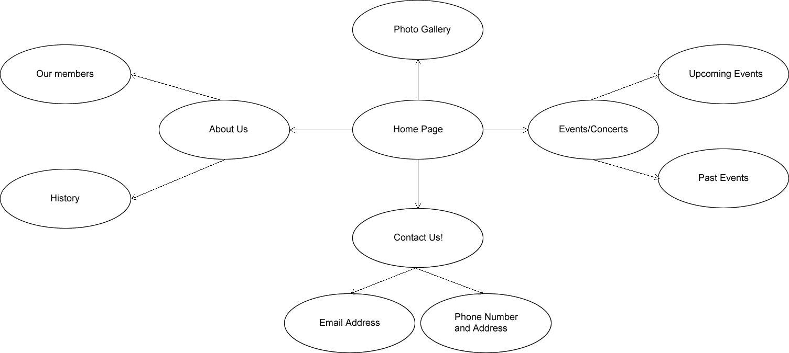

The goal of the webpage is to interact with members of the community and to show them what the XXX is all about. The webpage is designed to attract more people into the group and to increase donations as well as attendence at events that will be held through the year. The webpage will also tell users that there is a membership option if they wish to get some exclusive deals.
The success of the page will be evaluated by three success criteria ; donations, members joining and event attendance.
The targeted audience for the website will be people between the ages of 15-25 years old.
We will design a page that is basic but interactive. Example - Hovering over a picture reveals more information.
